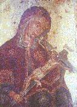

 |
Temetnis]
w Maria ]par;enoc `nat;wleb
`coni
`mpi[ici `mpibeni etacolomwn caji e;bytf
` N;o te
]moumi `mmwou `nwnq etqa] `mpilibanoc
`etapi`hmot
`nte ]me;nou] bebi nan ebol `nqytc
Aremici
nan `nEmmanouyl qen ]metra `mpar;eniki
afaiten
`nklyronomoc `n`hryi qen `;metouro `nnivyoui
Kata piws
etafws `mmof `nte peniwt `mpatriar,yc
ete vai
pe `puro Dauid af`i afjokf nan ebol
,ere `psousou
`nte pengenouc are`jvo nan `nEmmanouyl
Ten]ho
aripenmevu`i w ]`proctatyc `etenhot
nahren
pen=o=c Iy=c p,=c `ntef,a nennobi nan ebol
|